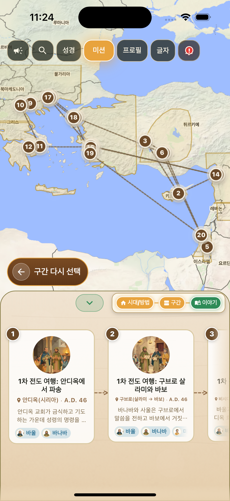
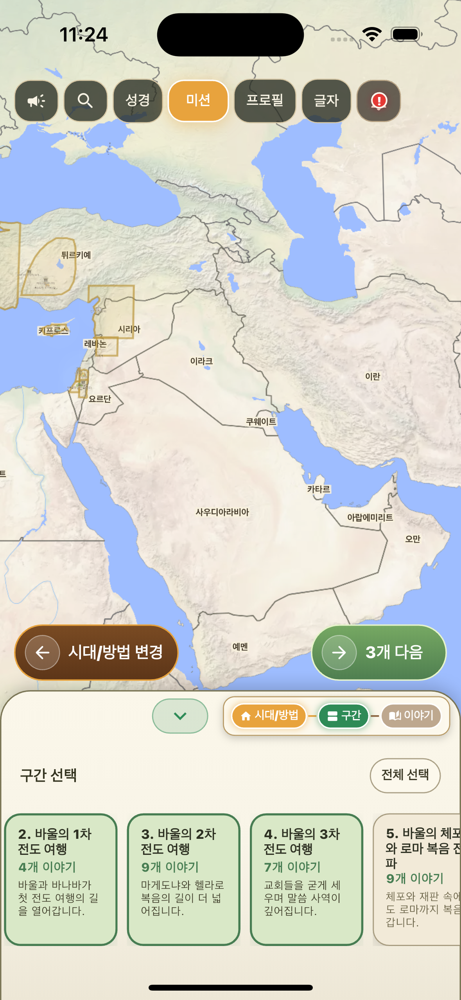
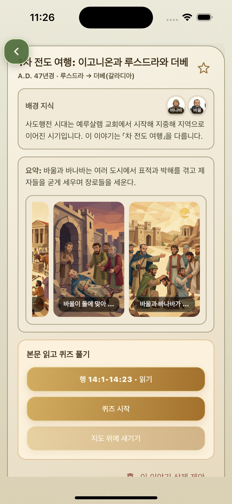
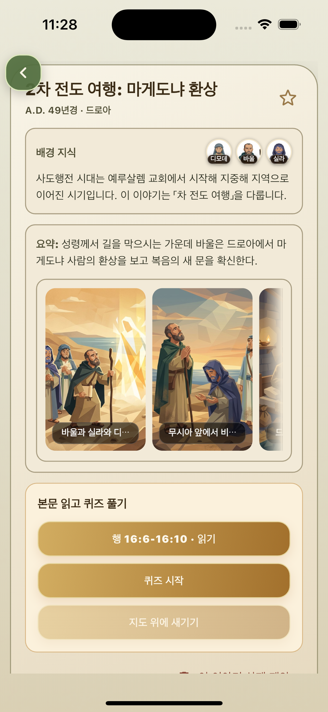
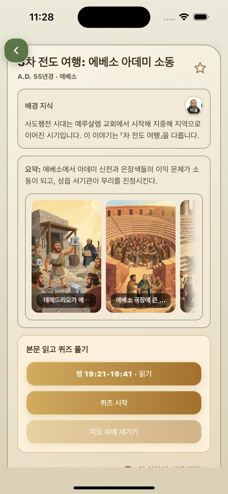
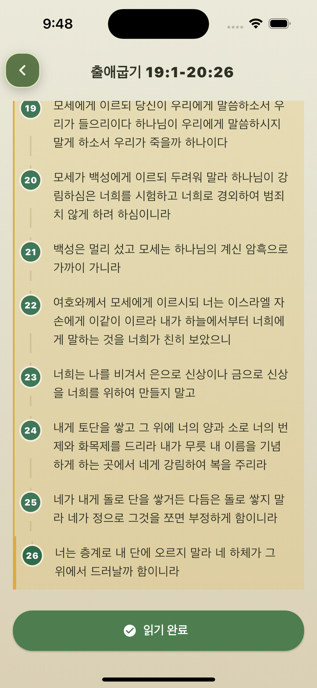
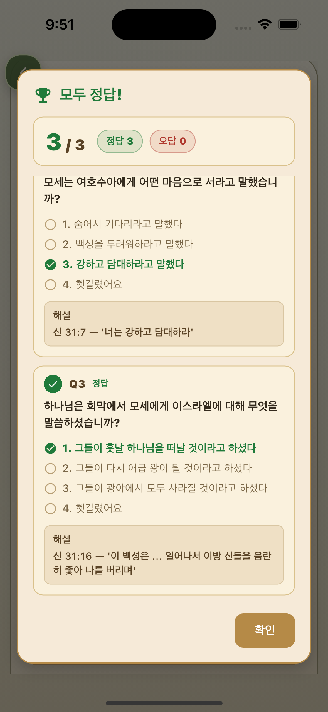
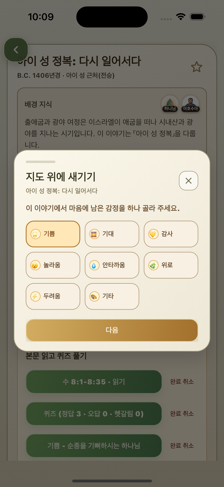

바울 또는 전도 여행 선택
바울을 인물로 선택하거나 1차, 2차, 3차 전도 여행 흐름을 골라 사도행전의 사건들을 정리합니다.
Paul Missionary Journey Map
안디옥에서 시작해 소아시아와 마게도냐, 아가야와 예루살렘, 로마로 이어지는 바울의 여정을 지도 위에서 시간순으로 따라갑니다.

Journey Flow
바울의 선교여행은 도시 이름이 많이 등장하기 때문에 글로만 읽으면 흐름을 놓치기 쉽습니다. 지도 위에서 보면 복음이 어떤 방향으로 확장되는지 더 또렷하게 보입니다.
바울을 인물로 선택하거나 1차, 2차, 3차 전도 여행 흐름을 골라 사도행전의 사건들을 정리합니다.
안디옥, 빌립보, 아덴, 고린도, 에베소, 예루살렘과 로마로 이어지는 이동을 지도 위에서 확인합니다.
각 도시에서 일어난 설교, 만남, 고난, 교회 개척의 장면을 사건 상세 페이지로 다시 읽습니다.
사도행전 본문을 읽고, 퀴즈로 여정의 핵심을 확인한 뒤 마음에 남은 감정을 기록합니다.
Journey Screens
전도 여행 메뉴에서 바울의 여정을 선택하고, 이어지는 지도 화면에서 사도행전의 주요 이동과 사건 흐름을 한눈에 확인합니다.

Event Details
1차, 2차, 3차 전도 여행에서 대표적인 사건을 열어 도시와 이동 경로 속에서 복음이 어떻게 전해졌는지 살펴봅니다.

바울과 바나바가 여러 도시를 지나며 복음을 전하고, 박해 속에서도 제자들을 세우는 1차 전도 여행의 중요한 흐름입니다.

바울이 마게도냐로 건너오라는 환상을 보고 새로운 지역으로 나아가는 장면은 선교 방향이 확장되는 전환점입니다.

에베소에서 복음이 지역 사회에 큰 영향을 미치며 일어난 소동은 말씀의 확산과 당시 문화적 충돌을 함께 보여줍니다.
Study Flow
지도에서 바울의 이동과 도시별 사건을 확인한 뒤, 성경 본문을 읽고 퀴즈로 이해를 점검하며 마지막에는 그 사건 앞에서 느낀 감정을 남깁니다.

사건과 연결된 말씀을 읽으며 지도에서 본 장면을 본문으로 다시 확인합니다.

읽은 내용을 간단한 질문으로 확인하며 사건의 핵심을 자연스럽게 정리합니다.

말씀을 읽고 남은 마음을 선택해 지도와 나의 묵상 흐름 안에 기록합니다.